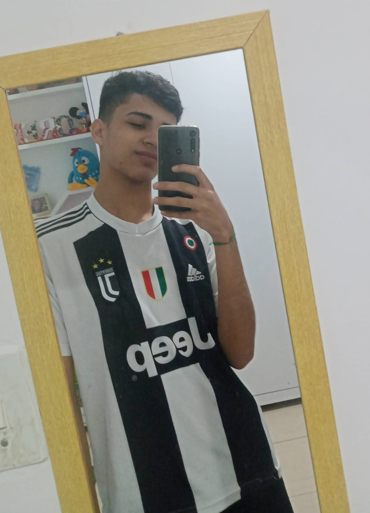
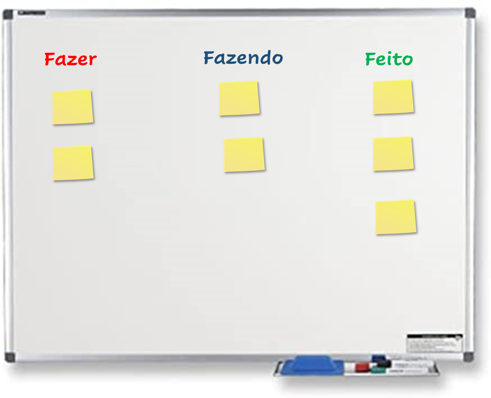

Meu MiniCurriculo
Nasci dia 2 de Setembro de 2001 na cidade de São Paulo, sou uma pessoa bastante dedicada, busco sempre ser responsansável com os meus compromissos e procuro sempre melhorar.
KANBAN
Sobre o KANBAN
Kanban é um cartão de sinalização que controla os fluxos de materiais e produção em uma indústria. Foi criado na década de 1960 na Toyota para o sistema de abastecimento e controle de estoques, este sistema é muito usado por várias empresas em várias áreas, principalmente no controle de atividades. No curso do Camp Jabaquara aprendi a usar o Kanban no controle das atividades do dia a dia. Uso para planejar minhas atividades escolares e domésticas. Pretendo usar o kanban nas atividades profissionais.
Meu quadro dos sonhos.
Esse é meu quadro dos sonhos, que uso como papel de parede do meu celular para me lembrar dos meus sonhos e me fazer correr atrás de cada um deles. O carro é uma Captiva Chevollet que sonho em ter, o campo de estadio de futebol Camp Nou que fica na espanha que desejo ir, uma formatura pelo fato de eu querer me formar em Engenharia Mecânica e a familia que eu sonho construir.